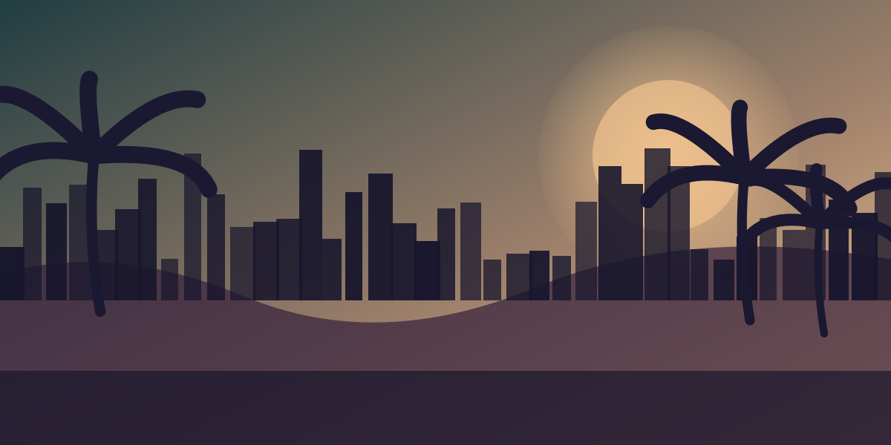
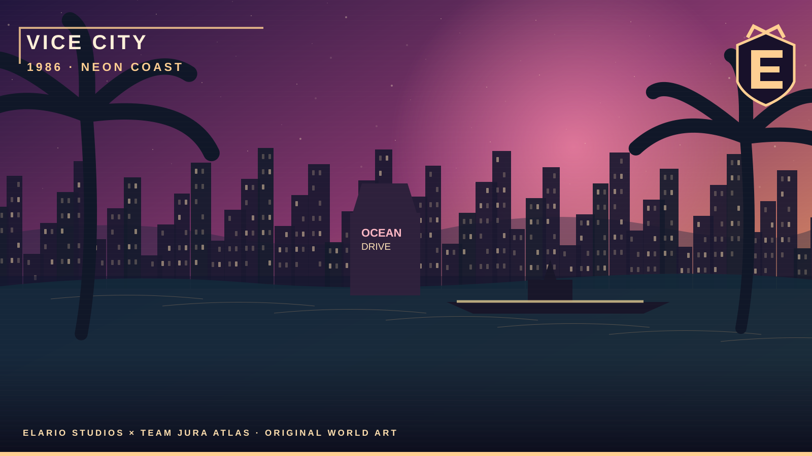
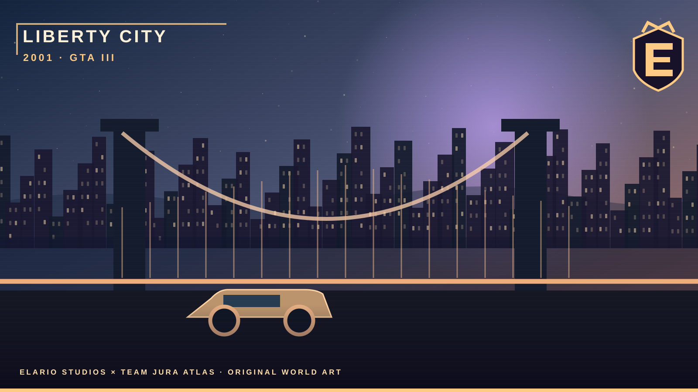
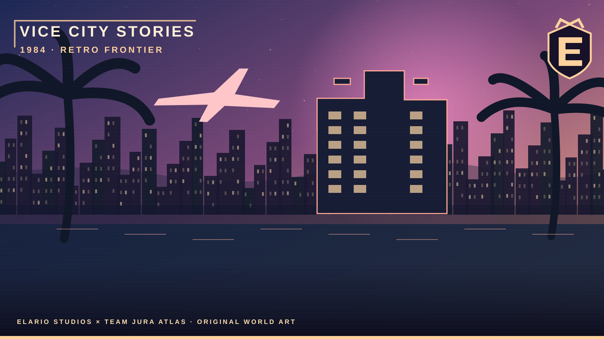
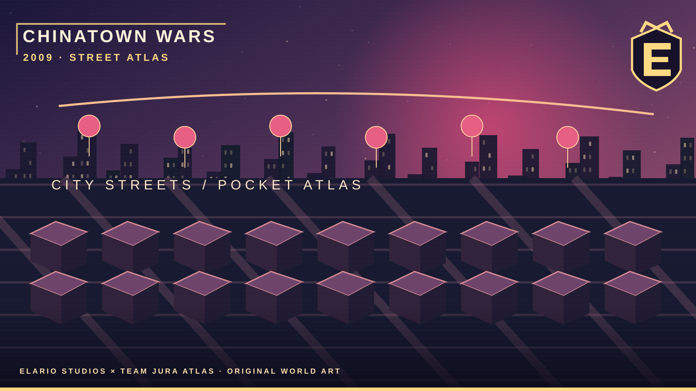
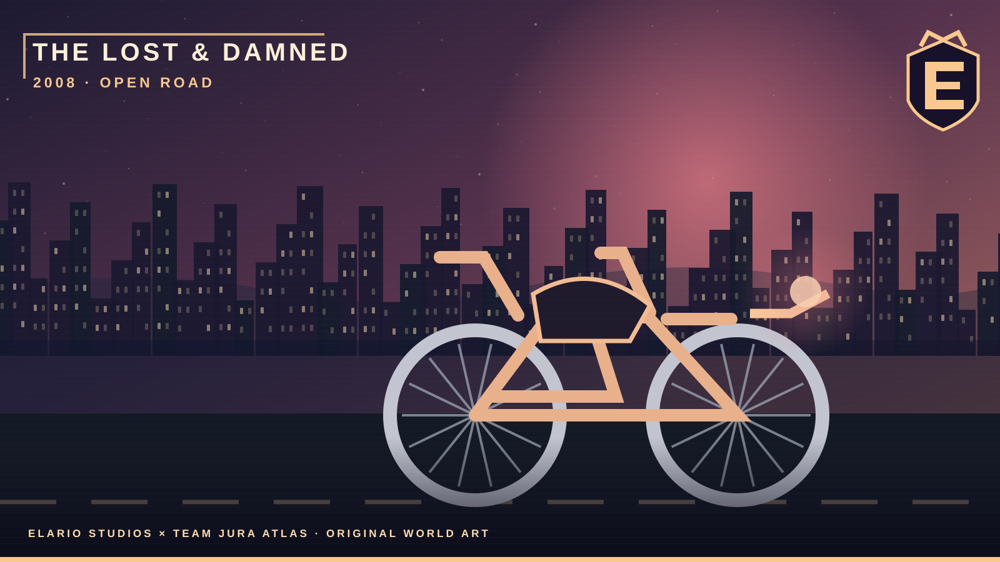
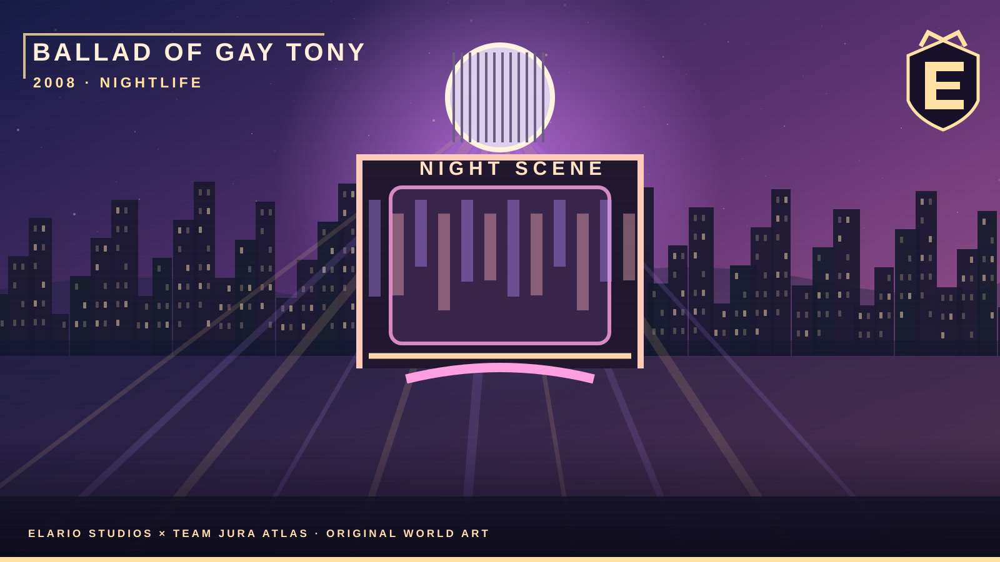

CHOOSE YOUR WORLD
Map directory
Game-specific map experiences. Reference gateways are labeled.
GTA V StoryLos Santos & Blaine CountyGame map ↗GTA OnlineMultiplayer worldLive world ↗GTA VI · LeonidaResearch and locationsResearch ↗Cayo PericoIsland and heist planningHeist island ↗ GTA IVLiberty City & AlderneyGame map ↗Liberty City Stories1998 Liberty CityReference ↗
GTA IVLiberty City & AlderneyGame map ↗Liberty City Stories1998 Liberty CityReference ↗
GTA IVLiberty City & AlderneyGame map ↗
GTA San AndreasThree cities and countrysideReference ↗
GTA Vice CityClassic Vice CityReference ↗
GTA IIIClassic Liberty CityReference ↗
Vice City Stories1984 Vice CityReference ↗Liberty City Stories1998 Liberty CityReference ↗
Chinatown WarsHandheld Liberty CityReference ↗
The Lost and DamnedGTA IV episodeReference ↗
The Ballad of Gay TonyGTA IV episodeReference ↗No matching worlds.
BUILT FOR THE COMMUNITY
Choose your next mission
THE BIGGER VISION
Powered by Elario Studios
Team Jura Atlas is our first showcase. Original animation, storytelling, cartoons and educational creative tools are future projects.